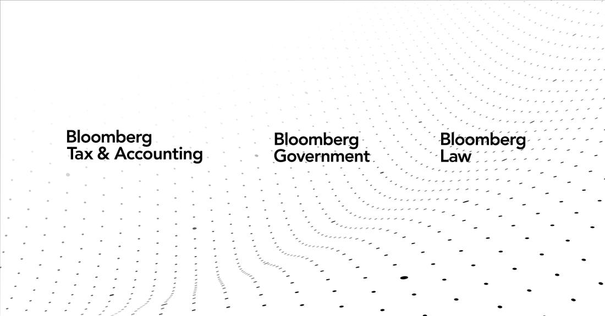

OpenAI Backs Three Bills to Tighten China's Access to AI Chips
OpenAI told US lawmakers it supports a bipartisan push in Congress to tighten China's access to AI chips and chipmaking equipment, Bloomberg reported on November 12, 2026 (Bloomberg Law published 2026-11-12T21:35:58Z). The company weighed the package for months and confirmed support this week; the position is not yet public, per people familiar. Punchbowl News (Ben Brody, X 15:59 UTC Nov 12, with Laura Weiss) names the three bills: the Chip Security Act (H.R. 3447, chip security mechanisms, ordered reported 42-0 on March 26), the MATCH Act (H.R. 8170, semiconductor manufacturing equipment, ordered reported 36-8 on April 22) and the AI OVERWATCH Act (H.R. 6875, licences for certain integrated circuits, ordered reported 42-2 on January 21). None has had a House floor vote; lawmakers seek to attach them to the annual defense bill, with no final agreement as of November 12. Context: POLITICO reported October 20 that OpenAI had stopped pressing for strict limits; Anthropic has campaigned openly for export controls since at least 2025; House Speaker Mike Johnson said November 12 there is a developing consensus. The 119th Congress ends January 3, 2027. Dual-verified: Bloomberg Law read in full plus FourWeekMBA read in full, reporting Punchbowl News.

- 01THE BACKING — Bloomberg reported on November 12, 2026 that OpenAI told US lawmakers it supports a bipartisan push to tighten China's access to AI chips and chipmaking equipment. The company had been weighing the package for months and confirmed its support to lawmakers this week, according to people familiar with the matter, who spoke anonymously because the position has not been made public. Punchbowl News reported earlier the same day that OpenAI told multiple Hill offices it supports three named bills: the Chip Security Act, the MATCH Act and the AI OVERWATCH Act.
- 02THE THREE BILLS — The Chip Security Act (H.R. 3447) concerns chip security mechanisms for integrated circuit products, including location verification to detect diversion; the MATCH Act (H.R. 8170) covers semiconductor manufacturing equipment and would press US allies to align restrictions on chipmaking tools; the AI OVERWATCH Act (H.R. 6875) covers licences for certain integrated circuits and would expand congressional review of Commerce's export-rule changes. All three cleared the House Foreign Affairs Committee; none has had a House floor vote. Lawmakers seek to attach them to the annual defense bill; Senate leaders said November 12 there was no final agreement.
- 03THE WATCHPOINT — Whether OpenAI states the position publicly, whether the three bills are attached to the National Defense Authorization Act, and whether any reaches a floor vote before the 119th Congress ends on January 3, 2027. Watch the White House's position and whether location verification and allied tool alignment close the diversion gaps Reuters and Axios reported on November 11-12.
WHAT HAPPENEDWhat Happened
OpenAI has told US lawmakers it supports a bipartisan push in Congress to tighten China's access to AI chips and chipmaking equipment, Bloomberg reported on November 12, 2026. The company had been weighing the package of export-related bills for months and confirmed its support to lawmakers this week, according to people familiar with the matter, who spoke anonymously because the position has not been made public. Punchbowl News reported earlier the same day that OpenAI told multiple Hill offices it supports three named bills: the Chip Security Act, the MATCH Act and the AI OVERWATCH Act.
The three bills cover different gaps. The Chip Security Act, H.R. 3447, concerns chip security mechanisms for integrated circuit products, including location verification to detect diversion of export-controlled AI processors; the House Foreign Affairs Committee ordered it reported 42 to 0 on March 26. The MATCH Act, H.R. 8170, covers certain semiconductor manufacturing equipment and would press US allies such as the Netherlands and Japan to align their restrictions on chipmaking tools sold to China; it was ordered reported 36 to 8 on April 22. The AI OVERWATCH Act, H.R. 6875, covers licences for certain integrated circuits and would expand congressional review when Commerce adjusts advanced chip export rules; it was ordered reported 42 to 2 on January 21. None of the three has had a House floor vote. Lawmakers are seeking to attach the measures to the annual defense-policy bill, the National Defense Authorization Act; Senate leaders said on November 12 that negotiators had no final agreement.
The timing put the reports on the same day Jensen Huang stepped down as Nvidia's chief executive, and Bloomberg ties the legislation's momentum to his departure. Nothing in the reporting links OpenAI's position to the departure: Bloomberg says OpenAI weighed the package for months, and the move reverses a pullback reported by POLITICO on October 20, which said OpenAI had stopped pressing for strict limits on chip sales to China. Anthropic, by contrast, has campaigned openly for export controls since at least 2025 and backs several of the chip bills that could be attached to the defense bill. House Speaker Mike Johnson said on November 12 that there is a developing consensus in Congress for limiting the exports. The 119th Congress ends on January 3, 2027.
WHY IT MATTERSThe chip supplier's biggest customer just joined the other side
OpenAI is Nvidia's most important customer and its most important dependent, and its support for the three bills changes the politics of the export-control fight. Nvidia spent 2026 lobbying against tighter curbs, and in December 2025 Congress dropped a proposal to curb chip exports from the defense bill in what Bloomberg described as a lobbying win for Nvidia. With Huang gone and OpenAI now backing the package, the company that buys the chips is aligned with the lawmakers who want to restrict where they can go. The three bills are narrow but structural: location checks on chips, allied alignment on tools, and congressional review of rule changes, each aimed at a gap the current rules leave open.
The position is still private, and that is the limit on how far to read it. OpenAI has made no public statement, and Bloomberg's report names no individual bill; the three names come from Punchbowl. The bills have cleared committee but none has had a floor vote, and Senate negotiators had no final agreement on the defense bill as of November 12. What matters next is whether the support becomes public and whether the measures survive into the defense bill, which must pass each year.
WHAT TO WATCHThe defense bill, the public statement, and the floor vote
The next facts are whether OpenAI states the position publicly, whether the three bills are attached to the National Defense Authorization Act, and whether any of them reaches a floor vote before the 119th Congress ends on January 3, 2027. Watch for the White House's position: The Information reported on November 9 that White House feedback to congressional staff called for a provision, attached to the AI OVERWATCH Act, ordering Commerce to close the remote-access loophole.
The longer test is whether the curbs actually bite. Reuters reported on November 12 that Chinese AI companies are trying to rent Nvidia-powered capacity at data centres outside China, and Axios reported on November 11 that an action authorized on November 5 against companies suspected of diverting Nvidia chips to China had not yet been taken. Location verification and allied tool alignment are designed for exactly those gaps; the bills' fate in the defense bill will show whether Congress is willing to close them.
SIGNAL JUDGMENT — ANALYSISNvidia's biggest customer just joined the side that wants to restrict its chips
Tokenta Signal's judgment: OpenAI backing the three bills is the most consequential chip-policy shift of the week, because it puts Nvidia's biggest customer on the other side of Nvidia's own lobbying. The package is structural rather than symbolic: location checks on chips, allied alignment on tools, and congressional review of rule changes, each aimed at a gap the current rules leave open. But the support is still private, none of the bills has had a floor vote, and the defense bill has no final agreement. Treat this as a realignment of the politics, not yet a change in the rules, and watch whether OpenAI says it in public.
WHAT REMAINS UNCERTAINWhat Remains Uncertain
EVIDENCEEvidence
Bloomberg Law, 'OpenAI Joins Groundswell of Support for AI Chip Control Measures,' published 2026-11-12T21:35:58Z, read in full. It reports that OpenAI is backing a bipartisan effort in Congress to block China's access to artificial intelligence chips and curb China's access to chipmaking equipment, adding support to legislation gaining momentum after the scandal that toppled Jensen Huang as Nvidia's chief executive. The AI developer has been weighing for months whether to support a package of export-related bills and confirmed to lawmakers this week that it would support the measures, according to people familiar with the matter, who requested anonymity to describe a position that is not yet public. FourWeekMBA, 'OpenAI Backs 3 Chip Export Bills in Nvidia CEO Exit Week,' read in full, reports that Punchbowl News reporter Ben Brody posted the scoop on X at 15:59 UTC on November 12, with Laura Weiss, saying OpenAI told multiple Hill offices it supports three bills: the Chip Security Act, the MATCH Act and the AI OVERWATCH Act, and that the measures would likely move in the annual National Defense Authorization Act. The three bills' numbers, titles, committee votes and status-file dates come from govinfo bill status files as reported by FourWeekMBA.
PRIMARY SOURCESPrimary Sources
- Bloomberg Law: OpenAI Joins Groundswell of Support for AI Chip Control Measures
https://news.bloomberglaw.com/artificial-intelligence/openai-joins-groundswell-of-support-for-ai-chip-control-measures - FourWeekMBA: OpenAI Backs 3 Chip Export Bills in Nvidia CEO Exit Week
https://fourweekmba.com/ai-openai-backs-3-chip-export-bills-in-nvidia-ceo-exit-week/ - WinBuzzer: OpenAI Reportedly Backs Tighter AI Chip Controls on China
https://winbuzzer.com/2026/11/13/ai-developer-openai-reportedly-backs-tighter-ai-chip-controls-on-china-xcxwbn/ - Talkesport: OpenAI Backs China Chip Curbs as Jensen Huang Exits Nvidia
https://www.talkesport.com/business/openai-anthropic-chip-export-controls-jensen-huang-exit/
RELATEDRelated Intelligence
- Anthropic's Regional Ban Takes Effect: Claude Off Limits in China, Hong Kong and Macau
- Google, TikTok and Meta Sue California to Block Its Under-16 Feed Ban
- Update: Apple Intelligence Beta Goes Live in China, With Qwen Inside Siri
- Nvidia Reportedly Tells Cloud Partners to Cap Chinese Customers at 49% of New Contracts